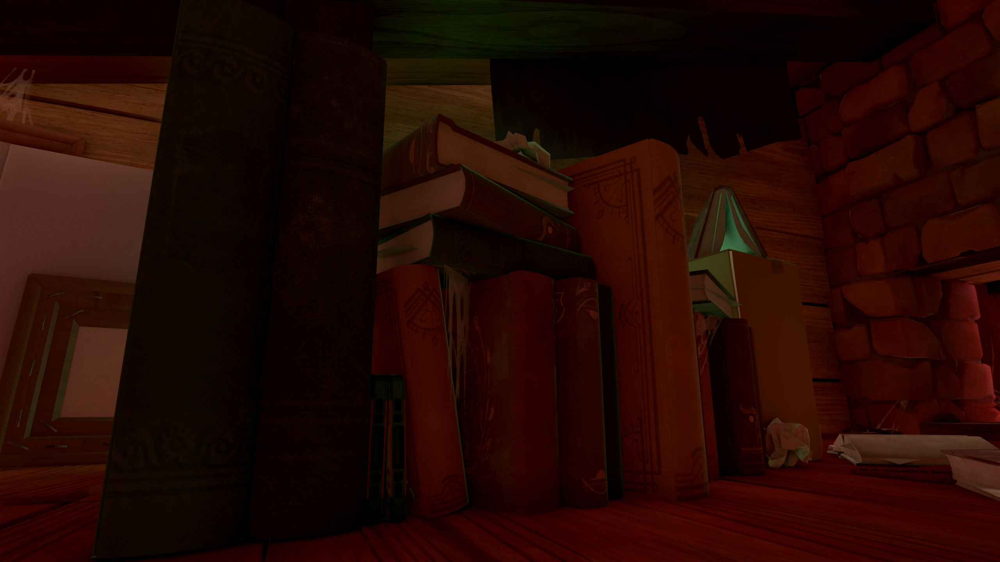
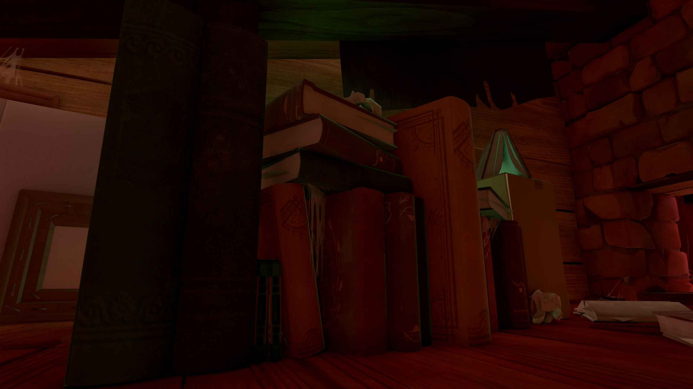
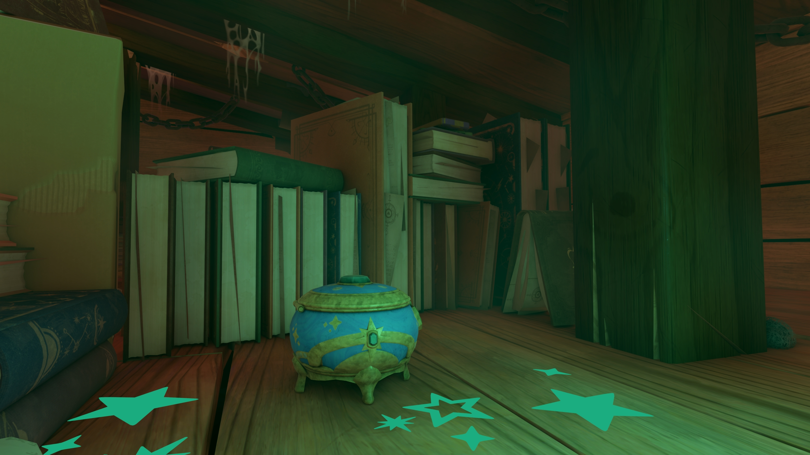
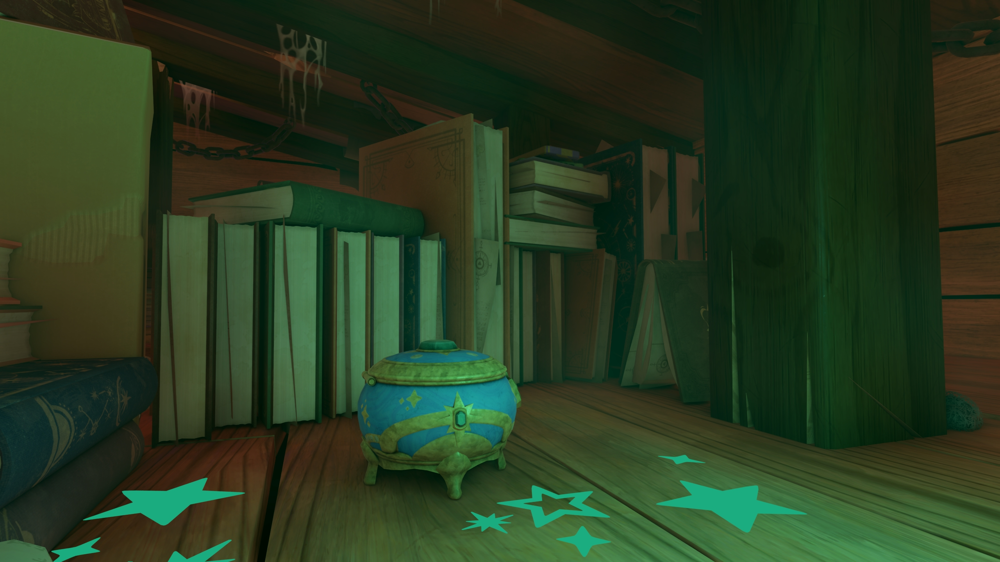

Visibility Bitmask Ambient Occlusion
November 5th, 2025
Elusive
Motivation
A few months ago I wrote an article about baking Ambient Occlusion (AO) as vertex attributes. It was a good approach because we were going for a retro look in that project in particular. However, I'm currently working on Elusive, a completely different game that requires more realistic lighting.
Baking lighting as lightmaps was our solution for some time, but it makes iteration slow, makes it impossible for artists to obtain immediate feedback of their changes in engine, and takes a lot of time to bake. Therefore, we have scratched that approach entirely and decided to go for real-time lighting.
My last article about Soft Shadows explains how we solved direct lighting, but indirect lighting is a different beast entirely. For the past few months we'd been using a rudimentary version of SSAO combined with Sparse Voxel GI, but we needed a better AO solution.
After doing some research for a while, I stumbled upon a paper from 2023 titled Screen Space Indirect Lighting with Visibility Bitmask. It builds on the foundations laid by Ground-Truth Ambient Occlusion, achieving results that are closer to a raytraced solution and with more intuitive parameters in my opinion.
Visibility Bitmask Ambient Occlusion (VBAO) is a great fit for our game as is, but using a custom render pipeline allows us to provide better inputs to it and obtain more appealing results, as I will show in this article.
Implementation
History
First of all, I'm not going to explain every single detail about how to implement VBAO, because you can already find that information online. Instead, I will give an overview of the technique, explain how we have integrated it in our render pipeline and provide source code. If you are not familiar with Screen-Space Ambient Occlusion, I suggest you go in chronological order and read these resources before you continue:
- SSAO: First implemented for Crysis in 2007.
- HBAO: Presented by Nvidia in 2008, popularized by Battlefield 3
- GTAO: Presented by Activision in 2016, used for the first time in Call of Duty: WWII
- XeGTAO: Intel's implementation of GTAO.
- VBAO: Published in 2023 by Olivier Therrien, Yannick Levesque, and Guillaume Gilet.
While there have been many other attempts at solving AO, I consider these as the most important ones in order to understand how we've gone from the first SSAO implementation back in 2007 to the present.
I should mention that RTAO is another popular technique to solve Ambient Occlusion, but it requires raytracing and is not a screen-space effect, so I will cover it in a separate article some time in the future.
Overview
VBAO is horizon-based, it doesn't trace rays or sample random points inside a hemisphere in screen-space as the traditional SSAO implementation. Instead, the hemisphere is split into slices, and each slice into two sides. For each side, a horizon angle is calculated by sampling the depth buffer along the slice direction of that side. Finally, based on the horizon angles, we can determine how much of the slice is occluded. The combined occlusion of each slice gives an approximation of the total hemisphere occlusion. This was first done in HBAO and improved later in GTAO.
In VBAO, the overall structure of the shader is the same as in GTAO, but in this case we won't calculate the maximum horizon angles for each side of every slice. Instead, slices are split into 32 sectors, and a single unsigned int is used as a bitmask to store which sectors of the slice are occluded. For each sample of the depth buffer, two positions are determined:
- Front Position: The exact point where the surface starts in view space using the unmodified depth buffer value.
- Back Position: An estimated point where the surface ends in view space, using an offsetted depth buffer using a constant thickness value.
Then, those positions are transformed into two sector indices and all sectors in between are flagged as occluded for that slice. Once we have finished calculating the slice occlusion, its bits are counted and added to the overall hemisphere occlusion.
This technique improves the results of GTAO because it can simulate the behavior of light passing behind objects, so thin objects are not over-occluded. For example, take a look at the following images. There is a wire hanging from the ceiling, connecting two light bulbs. GTAO darkens the entire silhouette of the wire above it, making it seem as if it was somehow stitched to the wall, instead of hanging. Meanwhile, VBAO properly captures light passing behind it in lower areas that are further away from the ceiling, and properly occludes the sides where the wire reaches the light bulbs.
Multi-Layered Depth
Usually a game renders to a color and depth buffers. Since we're using deferred rendering, there are also a variety of textures (G-Buffer) used for different purposes such as PBR properties, normals, emission and more.
When using screen-space effects such as SSAO or SSR, we'd typically just have information about the closest surfaces to the camera per-pixel because the depth buffer only holds a single value. However, our render pipeline has an option to enable multi-layered depth that currently supports a secondary G-Buffer. Objects are assigned a layer target based on their rendering layer.
For example, all characters are rendered to the second G-Buffer, which allows screen-space effects to see behind them. This feature has a considerable cost because more textures are allocated, lighting is performed twice, and more texture fetches are required. In practice, using only two layers is fast enough that the benefits are worth it. Most games using screen-space effects suffer from occlusion artifacts, generating strange silhouettes below objects in SSR, or halos around characters in SSAO. While those problems can be resolved completely using raytracing, our solution is more performant and solves the most obvious and annoying cases where screen-space effects usually fail.
For example, in the following videos you can see how a character occluding some objects behind it affects how those objects occlude their surroundings. In the first video, Multi-Layared Depth is Off, and in the second it is On. The occlusion artifacts due to character occlusion are completely solved using this technique.
Per-Material Thickness
If you follow the original VBAO paper, you can find a comparison of different thickness values compared against a raytraced reference. While it is commendable how good this algorithm looks with a constant thickness value, it is clear that having more precise thickness data per-pixel would lead to a more accurate solution.
To support that, we have introduced a thickness parameter that can be configured per material. This allows artists to modify the occlusion contribution of objects in an isolated way. The value is encoded into 16 bits in the G-Buffer along with other physical properties. For example, foliage should use a very small thickness value to avoid over-occlusion, while big objects benefit from a larger thickness value. Now, the global thickness parameter becomes a multiplier of the per-material value.
In the following comparison, you can see how configuring a lower thickness for a character makes its contribution to Ambient Occlusion more believable:
Calculating Occlusion
This VBAO implementation is very pipeline-specific, so bear that in mind when checking the code below. The execution varies depending on the keyword named _MULTI_LAYER_DEPTH. When disabled, the code is a straightforward VBAO implementation with some tweaks that uses a single-value depth buffer and G-Buffer normals. However, when the keyword is enabled the shader has access to two different depth values, their normals and their thickness.
float _AO_OuterRadius;
float _AO_InnerRadius;
float3 _AO_FarParams; // start, end, range
float _AO_FarRadius;
float _VBAO_Thickness;
#define _AO_Radius (lerp(_AO_OuterRadius, _AO_FarRadius, farness))
#if defined(_VBAO_QUALITY_MEDIUM)
#define _VBAO_SLICES 1
#define _VBAO_SAMPLES_PER_SLICE 16
#elif defined(_VBAO_QUALITY_HIGH)
#define _VBAO_SLICES 1
#define _VBAO_SAMPLES_PER_SLICE 24
#elif defined(_VBAO_QUALITY_ULTRA)
#define _VBAO_SLICES 2
#define _VBAO_SAMPLES_PER_SLICE 32
#else
#define _VBAO_SLICES 1
#define _VBAO_SAMPLES_PER_SLICE 12
#endif
float2 SampleAONoise(float2 screenUV)
{
uint2 coord = screenUV * GetCameraTexelSize().zw;
return InterleavedGradientNoise2(coord);
}
float CalculateVBAO(float2 screenUV, float depth, float3 normalWS, float2 noise)
{
if (DepthIsSkybox(depth))
return 1.0;
float hemisphereAngle = noise.x * PI;
float cos_hemisphereAngle = cos(hemisphereAngle);
float sin_hemisphereAngle = sin(hemisphereAngle);
float eyeDepth = LinearEyeDepth(depth);
float farness = saturate((eyeDepth - _AO_FarParams.x) / _AO_FarParams.z);
float normalBias = lerp(_SSAO_NORMAL_MIN_BIAS, _SSAO_NORMAL_MAX_BIAS, farness);
float3 normal = TransformWorldToViewNormal(normalWS);
float3 position = ReconstructViewPosition(screenUV, depth) + normal * normalBias;
float3 viewDir = -FastNormalize(position);
float3x3 tbn = GetTBN(viewDir, GetSafeTangent(viewDir));
const int Nd = _GTAO_SLICES;
const int m = _GTAO_SAMPLES_PER_SLICE;
const int mDiv2 = m / 2;
const int ring = 0;
float radius = _AO_Radius;
float thickness = _VBAO_Thickness;
float maxThickness = radius * 0.75;
const float sliceRotation = PI / Nd;
const float cos_sliceRotation = cos(sliceRotation);
const float sin_sliceRotation = sin(sliceRotation);
float2 direction = float2(0, 1);
float occlusion = 0.0;
float totalWeight = 0.0;
for (int d = 0; d < Nd; d++)
{
direction = Rotate2D(direction, cos_sliceRotation, sin_sliceRotation);
float3 directionTS = float3(Rotate2D(direction, cos_hemisphereAngle, sin_hemisphereAngle), 0.0);
float3 sliceDirection = FromTangentSpace(directionTS, tbn);
float3 sliceNormal = FromTangentSpace(float3(-directionTS.y, directionTS.x, 0.0), tbn);
float3 normalProjected = ProjectPointOnPlane(normal, float3(0, 0, 0), sliceNormal);
float normalProjectedLength = FastLength(normalProjected);
normalProjected /= normalProjectedLength;
float n = FastAcos(dot(normalProjected, sliceDirection)) - PI / 2.0;
float h1 = -1.0;
float h2 = -1.0;
uint bi = 0;
#define VBAO_SLICE_ITER(h, otherDepth, otherThickness, sign)\
{\
float3 otherPos = ReconstructViewPosition(sampleUV, otherDepth);\
float3 otherPosBack = otherPos - viewDir * min(maxThickness, otherThickness) * _VBAO_Thickness;\
float3 otherDir = otherPos - position;\
float3 otherDirBack = otherPosBack - position;\
float otherDirLength = FastLength(otherDir);\
float otherDirBackLength = FastLength(otherDirBack);\
float cos_angle = dot(otherDir, viewDir) / otherDirLength;\
float cos_angle_back = dot(otherDirBack, viewDir) / otherDirBackLength;\
float angle = FastAcos(cos_angle);\
float angleBack = FastAcos(cos_angle_back);\
float2 minmax = saturate((sign * -float2(angle, angleBack) - n + 1.5707) / PI);\
minmax = minmax.x > minmax.y ? minmax.yx : minmax;\
uint2 ab = clamp(round(32.0 * float2(minmax.x, minmax.y - minmax.x)), 0, 32);\
uint bj = ((1u << ab.y) - 1u) << ab.x;\
bi = bi | bj;\
}
#ifdef _MULTI_LAYER_DEPTH
#define VBAO_SLICE_LAYERS(h, sign)\
{\
float4 otherDepths = SampleRawSceneDepthData(sampleUV);\
VBAO_SLICE_ITER(h, otherDepths.r, otherDepths.b, sign)\
VBAO_SLICE_ITER(h, otherDepths.g, otherDepths.a, sign)\
}
#else
#define VBAO_SLICE_LAYERS(h, sign)\
{\
float otherDepth = SampleSceneDepth(sampleUV);\
VBAO_SLICE_ITER(h, otherDepth, 1.0, sign)\
}
#endif
#define VBAO_SLICE_DIR(h, sign) \
{\
for (int i = 1; i <= mDiv2; i++)\
{\
float fi = ((float)i-noise.y)/mDiv2;\
fi = fi * fi;\
float3 samplePos = position + sliceDirection * fi * radius * sign;\
float2 sampleUV = TransformViewToScreenUV(samplePos);\
if (!IsSaturated(sampleUV))
continue;\
VBAO_SLICE_LAYERS(h, sign)\
}\
}
VBAO_SLICE_DIR(h1, 1.0)
VBAO_SLICE_DIR(h2, -1.0)
occlusion += (1.0 - countbits(bi) / 32.0) * normalProjectedLength;
totalWeight += normalProjectedLength;
}
occlusion /= totalWeight;
return occlusion;
}
Quality Presets
It is important to offer different options that provide scalable graphical fidelity. After all, this game is meant to run both on a Nintendo Switch and a PS5 Pro. These are our currently defined presets, although they might change before launch:
| Preset | Slices | Steps | Total SPP | Time (Multi-Layered Off) | Time (Multi-Layered On) |
|---|---|---|---|---|---|
| Low | 2 | 4 | 8 | 0.2ms | 1.0ms |
| Medium | 3 | 6 | 18 | 0.3ms | 1.7ms |
| High | 4 | 8 | 32 | 0.5ms | 2.9ms |
| Ultra | 8 | 8 | 64 | 2.1ms | 4.2ms |
As you can see, multi-layered depth is expensive, mostly because with it enabled, VBAO has to read a depth buffer that has four channels instead of one, and because it has to be executed twice (once per layer). Thankfully, it is an optional feature in the pipeline, so lower-end hardware will run with it off. Performance has been measured on a RTX 4070 Laptop at 1080p. In the following images, you can compare the results of all presets with denoising off and on.
You might have noticed that there is almost no visual difference between high and ultra, but performance-wise it is a huge step. The ultra preset has an advantage in motion though, as it can reduce ghosting artifacts in some cases because there is less aliasing in the base image. But basically, the medium preset is the way to go as it provides a good balance between performance and fidelity.
It is a great achievement that in the lowest quality preset, the denoised output is very smooth and runs very fast. Ambient Occlusion is an integral part of the game's appearance, so it must be present on all platforms and this will help us fulfill that goal.
Denoising
Denoising is most important when using lower quality presets because less samples per pixel lead inevitably to more aliasing. The images in this section are rendered at 720p in the medium quality preset for demonstration purposes.
Since we can't sample every single position inside the hemisphere because it would make any GPU explode, we need to calculate Ambient Occlusion stochastically. This means that the sampled positions vary spatially and temporally as well. A noise function must be used that gives us two different random values per pixel. One value is used to rotate the hemisphere slices, and the other to apply an offset to the samples along each slice.
I had some headaches while searching for a good noise function to be honest. First, I tried using blue noise, and spatio-temporal blue noise (STBN). However, it didn't get along very well with neighbourhood clipping in the TAA pass, so I scratched that approach. I needed a noise pattern with very low discrepancy between pixels so that TAA would work well with it. In XeGTAO, they use a Hilbert Curve of level 6 (64x64 pattern repetition) to turn a 2D screen coordinate into a 1D index. Then, that index is used to sample a low discrepancy sequence (Martin Roberts R2 sequence). This approach was more stable than blue noise in my experience, but still had some convergence issues in the TAA pass.
In the end, I used Interleaved Gradient Noise (IGN). While it only provides a single random value, I used a multiplier and a frac operation to obtain a second value. I had to carefully search for a good multiplier value, and ended up using 4.854102. The idea is that while IGN cycles between 0 and 1 once, the second noise value should cycle multiple times. In practice, this helps VBAO capture more details and reduce banding artifacts.
TEXTURE2D(_HilbertMap);
uint _HilbertResolution;
int _FrameCountMod64;
int2 ihilbert(int i, int level)
{
int2 p = int2(0, 0);
for (int k = 0; k < level; k++)
{
int2 r = int2(i >> 1, i ^ (i >> 1)) & 1;
if (r.y == 0)
{
if (r.x == 1)
{
p = (1 << k) - 1 - p;
}
p = p.yx;
}
p += r << k;
i >>= 2;
}
return p;
}
float2 MartinRobertR1Sequence(uint n)
{
const float g = 1.6180339887498948482;
const float a1 = 1.0 / g;
float x = frac(0.5 + a1 * n);
return x;
}
float2 MartinRobertR2Sequence(uint n)
{
const float g = 1.32471795724474602596;
const float a1 = 1.0 / g;
const float a2 = 1.0 / (g * g);
float x = frac(0.5 + a1 * n);
float y = frac(0.5 + a2 * n);
return float2(x, y);
}
uint Hilbert(uint2 p, uint level)
{
uint d = 0;
for (uint k = 0; k < level; k++)
{
uint n = level - k - 1;
uint2 r = (p >> n) & 1;
d += ((3 * r.x) ^ r.y) << (2 * n);
if (r.y == 0)
{
if (r.x == 1)
{
p = (1 << n) - 1 - p;
}
p = p.yx;
}
}
return d;
}
float R1Noise(uint2 coord)
{
uint n = Hilbert(coord, 6);
n += 288 * _FrameCountMod64;
return MartinRobertR1Sequence(n);
}
float2 R2Noise(uint2 coord)
{
uint n = Hilbert(coord, 6);
n += 288 * _FrameCountMod64;
return MartinRobertR2Sequence(n);
}
uint GetHilbertLUT(uint2 coord)
{
coord %= _HilbertResolution;
float2 encoded = LOAD_TEXTURE2D(_HilbertMap, coord);
uint r = (uint(encoded.r * 255) & 0xFF);
uint b = (uint(encoded.g * 255) & 0xFF) << 8;
uint n = r + b;
return n;
}
float2 R1NoiseLUT(uint2 coord)
{
uint n = GetHilbertLUT(coord);
n += 288 * _FrameCountMod64;
return MartinRobertR1Sequence(n);
}
float2 R2NoiseLUT(uint2 coord)
{
uint n = GetHilbertLUT(coord);
n += 288 * _FrameCountMod64;
return MartinRobertR2Sequence(n);
}
float2 InterleavedGradientNoise2(uint2 coord)
{
float ign = InterleavedGradientNoise(coord, _FrameCountMod64);
float ign2 = frac(ign * 4.854102);
return float2(ign, ign2);
}
In order to prevent ghosting in the TAA pass, it is important to denoise AO spatially before. To do so, I have used a bilateral filtering pass that uses depth information to preserve edges. In our case, using a separable gaussian blur filter provided good results:
int _AO_DenoiseRadius;
float2 _AO_DenoiseDirection;
float3 _AO_FarParams; // start, end, range
float _AO_DenoiseWeights[32]; // Precalculated gaussian weights
float GetDepthRange(float eyeDepth, float viewAngle, float targetResolutionHeight, float farStart, float farRange)
{
const float _DENOISE_SMOOTHNESS = 0.02;
const float _DENOISE_MAX_SMOOTHNESS = 2.0;
const float _DENOISE_FAR_SMOOTHNESS = 5.0;
float farness = saturate((eyeDepth - farStart) / farRange);
float depthRange = min(_DENOISE_SMOOTHNESS / viewAngle / (targetResolutionHeight / 1080.0), _DENOISE_MAX_SMOOTHNESS);
depthRange = lerp(depthRange, _DENOISE_FAR_SMOOTHNESS, farness);
return depthRange;
}
OcclusionOutput DenoiseAO(Texture2D tex, float4 texelSize, float2 screenUV)
{
int2 coord = screenUV * texelSize.zw;
float2 depths;
bool layer2;
SampleSceneDepth(screenUV, depths, layer2);
float eyeDepth = LinearEyeDepth(depths.x);
float3 normal = DecodeNormal(SampleSceneNormals(screenUV, false).zw);
float3 position = ReconstructWorldPosition(screenUV, depths.x);
float3 viewDirection = GetViewDirection(position);
float angle = Square(max(0.0001, abs(dot(viewDirection, normal))));
float depthRange = GetDepthRange(eyeDepth, angle, texelSize.w, _AO_FarParams.x, _AO_FarParams.z);
float avgOcclusion = 0.0;
float totalWeight = 0.0;
#ifdef _MULTI_LAYER_DEPTH
float eyeDepth2 = LinearEyeDepth(depths.y);
float3 normal2 = DecodeNormal(SampleSceneNormals(screenUV, true).zw);
float3 position2 = ReconstructWorldPosition(screenUV, depths.y);
float3 viewDirection2 = GetViewDirection(position2);
float angle2 = Square(max(0.0001, abs(dot(viewDirection2, normal2))));
float depthRange2 = GetDepthRange(eyeDepth2, angle2, texelSize.w, _AO_FarParams.x, _AO_FarParams.z);
float avgOcclusion2 = 0.0;
float totalWeight2 = 0.0;
#endif
for (int i = -_AO_DenoiseRadius; i <= _AO_DenoiseRadius; i++)
{
float2 otherUV = screenUV + _AO_DenoiseDirection * i * texelSize.xy;
float3 occlusionSample = SAMPLE_TEXTURE2D_LOD(tex, point_clamp_sampler, otherUV, 0).rgb;
float2 otherDepths = SampleSceneDepths(otherUV);
#ifdef _MULTI_LAYER_DEPTH
float occlusion = occlusionSample.g;
float occlusion2 = occlusionSample.b;
float otherDepth = otherDepths.x;
float otherDepth2 = otherDepths.y;
#else
float occlusion = occlusionSample.r;
float otherDepth = otherDepths.x;
#endif
float otherEyeDepth = LinearEyeDepth(otherDepth);
float weight = 1.0 - saturate(abs(eyeDepth - otherEyeDepth) / depthRange);
weight *= _AO_DenoiseWeights[abs(i)];
avgOcclusion += occlusion * weight;
totalWeight += weight;
#ifdef _MULTI_LAYER_DEPTH
float otherEyeDepth2 = LinearEyeDepth(otherDepth2);
float weight2 = 1.0 - saturate(abs(eyeDepth2 - otherEyeDepth2) / depthRange);
weight2 *= _AO_DenoiseWeights[abs(i)];
avgOcclusion2 += occlusion2 * weight2;
totalWeight2 += weight2;
#endif
}
avgOcclusion /= totalWeight;
if (DepthIsSkybox(depths.x)) avgOcclusion = 1.0;
#ifdef _MULTI_LAYER_DEPTH
avgOcclusion2 /= totalWeight2;
if (DepthIsSkybox(depths.y)) avgOcclusion2 = 1.0;
return OcclusionOutput(layer2 ? avgOcclusion2 : avgOcclusion, avgOcclusion, avgOcclusion2);
#else
return avgOcclusion;
#endif
}
Finally, enabling temporal antialiasing completely smooths out the result without ghosting artifacts:
Results
Now I will present the final results of the VBAO implementation in different scenarios. For each of these, you can see the raw output of the Ambient Occlusion pass alone, and how it looks on the final game. Remember that you can use sliders at the bottom of the comparisons to see how the game looks with VBAO Off/On.

 


 



Conclusion
I was a bit skeptical that using VBAO would make a great difference compared to SSAO, but decided to give it a try anyway. I'm glad I did, because the game's lighting has massively improved thanks to it. Indirect lighting is much more plausible now, and screen-space artifacts are highly minimized.
Take a look at the following comparison between SSAO and VBAO. Notice how SSAO mostly looks as dark halos around objects, while VBAO has a better clue about regions where less light would reach.
I honestly don't think it gets much better than this when it comes to screen-space Ambient Occlusion, but then again, I thought the same when I first saw GTAO. Maybe in a few years someone will come up with an even better solution that does not require raytracing. But until then, I'm very satisfied with what we've got.
Going Forward
There are some aspects of the implementation that could still be improved, these are some ideas that come to mind:
- Depth Mip Chain: In XeGTAO, it is mentioned that a depth buffer mip chain is created to speed up the algorithm. The idea is to use increasingly higher mips (less resolution) as the distance from the hemisphere origin grows. One of the reasons most SSAO algorithms are so costly is because of cache trashing, so using lower resolution textures for most samples could in fact improve performance notoriously.
- Better Noise Pattern: While spatial denoising combined with TAA smooths the occlusion result greatly. I have noticed that it doesn't perfectly converge over time, which leads to some noise flickering. I know a lot of it comes down to the noise pattern used to calculate AO, so I will do some research about it in the future.
- Per-Vertex Thickness: While per-material thickness is a huge improvement over a global thickness parameter, sometimes it's not enough to represent some complex models. An idea that comes to mind would be preprocessing models to generate a vertex attribute that acts as an average thickness value per vertex. That way we would have very precise information to better guide the VBAO algorithm, but we'd probably need more than 16 bits in the G-Buffer for it!
- Raytraced Ambient Occlusion (RTAO): Implementing RTAO would not only be great to have as an option for capable GPUs, it would also help us parameterize VBAO in a way that more closely matches a raytraced reference in-engine.
That said, I consider Ambient Occlusion to be one of the most entertaining effects to implement and learn about as a graphics programmer. I think there is so much one can learn about rendering, mathematics and physics, just from implementing this algorithm, that I can't believe it took me so long to delve into it.
While I consider this a huge milestone, there is still so much to learn and so many ways to improve our render pipeline. What should be next? Maybe SSGI would be great!